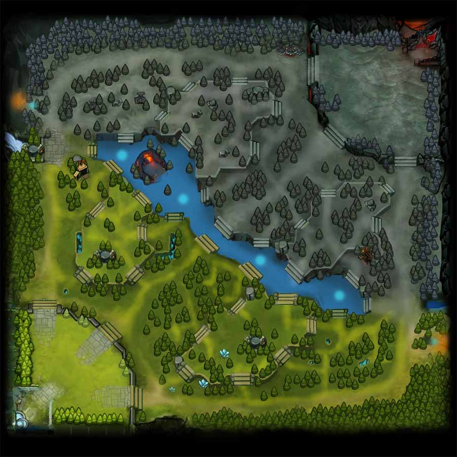

<br>
<ion-row *ngIf="timeFilter !== undefined" style="text-align: center;">
  <ion-col size="12">
    <span>{{duration}}</span>&nbsp;
      <ion-icon (click)="toggleTimeFilter()" name="close"></ion-icon>
  </ion-col>
</ion-row>
<ion-row *ngIf="timeFilter === undefined" style="text-align: center;">
  <ion-col size="12">
    <ion-button (click)="toggleTimeFilter()" color="dark" fill="outline">
      <ion-label>Apply time filter</ion-label>
    </ion-button>
  </ion-col>
</ion-row>
<br>
<ion-item *ngIf="timeFilter !== undefined">
  <ion-range (ionChange)="changeTime($event)" min="0" max="{{match?.duration}}" color="secondary">
    <ion-label slot="start">Start</ion-label>
    <ion-label slot="end">End</ion-label>
  </ion-range>
</ion-item>
<ion-slides pager="true">
  <ion-slide style="display: block;">
    <h3>Radiant</h3>
    <ion-select class="select" value="{{rSelected}}" [interface]="'action-sheet'" (ionChange)="changeRPlayer($event)">
      <ion-select-option value="all">All</ion-select-option>
      <ion-select-option *ngFor="let p of radiants" value="{{p.heroId}}">
        {{getHeroById(p.heroId).localizedName}}
      </ion-select-option>
    </ion-select>
    <div class="map-r" *ngIf="width">
      
      
      
    </div>
    <ion-item lines="none">
      <ion-col size="6" style="text-align: center;">
        <ion-toggle color="warning" [checked]="showRWard" (ionChange)="toggleShow('w', 'r')"></ion-toggle>
        <ion-label class="switch-label">Wards</ion-label>
      </ion-col>
      <ion-col size="6" style="text-align: center;">
        <ion-toggle color="secondary" [checked]="showRSen" (ionChange)="toggleShow('s', 'r')"></ion-toggle>
        <ion-label class="switch-label">Sentries</ion-label>
      </ion-col>
    </ion-item>
    <br>
    <br>
  </ion-slide>
  <ion-slide style="display: block;">
    <h3>Dire</h3>
    <ion-select class="select" value="{{dSelected}}" [interface]="'action-sheet'" (ionChange)="changeDPlayer($event)">
      <ion-select-option value="all">All</ion-select-option>
      <ion-select-option *ngFor="let p of dires" value="{{p.heroId}}">
        {{getHeroById(p.heroId).localizedName}}
      </ion-select-option>
    </ion-select>
    <div class="map-d" *ngIf="width">
      <ion-img class="base-d" src="../../../assets/map.jpg"></ion-img>
      
      
    </div>
    <ion-item lines="none">
      <ion-col size="6" style="text-align: center;">
        <ion-toggle color="warning" [checked]="showDWard" (ionChange)="toggleShow('w', 'd')"></ion-toggle>
        <ion-label class="switch-label">Wards</ion-label>
      </ion-col>
      <ion-col size="6" style="text-align: center;">
        <ion-toggle color="secondary"  [checked]="showDSen" (ionChange)="toggleShow('s', 'd')"></ion-toggle>
        <ion-label class="switch-label">Sentries</ion-label>
      </ion-col>
    </ion-item>
    <br>
    <br>
  </ion-slide>
</ion-slides>

